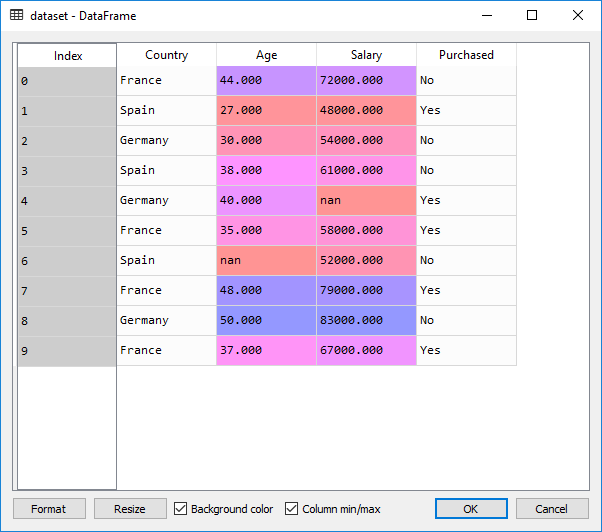
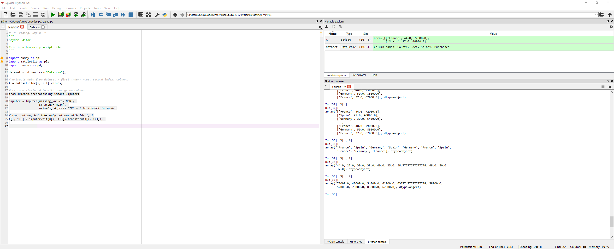
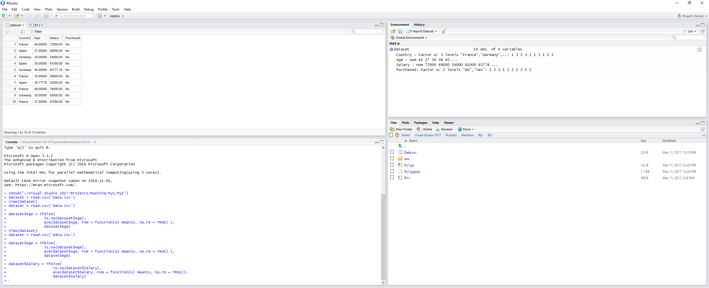
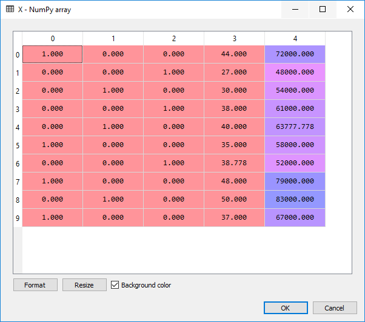
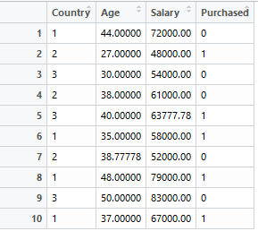
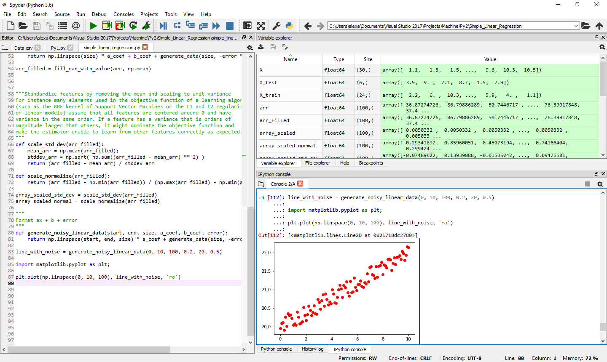

My Machine Learning Notebook - Part 1 (Data Preprocessing)
This is the first part of my Machine Learning notebook. As I am totally new to ML, the content follows the Udemy course "Machine Learning A-Z™: Hands-On Python & R". As in the course, I'll be using Spyder and RStudio.
For this article, let's consider the following dataset:

The dataset has:
- First columns - independent variables (loaded into the variable X in python below)
- Last column - dependent variable (Purchased)
- Missing values - NaN
Our machine learning algorithm has the following form: f(X) = y, where X is the set of values for independent variables and y is the dependent variable
Importing and cleaning up data
Steps:
- Importing data. Splitting data into dependent and independent variables
- Taking care of missing data - in this case, by replacing the missing data with average of the rest of the column.
- Encode categorical data - vocabulary: categorical data == data that represents categories, in our example Country, Yes / No.
- Feature scaling - this is important because many machine learning algorithms use Euclidian distance and it can happen that if the features are not within the same scale, one feature will dominate the other (especially that Euclidian distance is based on squares).
Python
import numpy as np;
import matplotlib as plt;
import pandas as pd;
dataset = pd.read_csv("Data.csv");
# extracts data from dataset - first index: rows, second index: columns
X = dataset.iloc[:, :-1].values;
# replace missing data with average on column
from sklearn.preprocessing import Imputer;
imputer = Imputer(missing_values='NaN',
strategy='mean',
axis=0); # press CTRL + i to inspect in spyder
# row, column, but take only columns with idx 1, 2
# X is or independent variable
X[:, 1:3] = imputer.fit(X[:, 1:3]).transform(X[:, 1:3]);

R
dataset = read.csv('Data.csv')
dataset$Age = ifelse(
is.na(dataset$Age),
ave(dataset$Age, FUN = function(x) mean(x, na.rm = TRUE) ),
dataset$Age)
dataset$Salary = ifelse(
is.na(dataset$Salary),
ave(dataset$Salary, FUN = function(x) mean(x, na.rm = TRUE)),
dataset$Salary)

Back to Python
Encoding categorical data to numbers for futher processing
Two steps:
- Transform from label (string) to numbers
# encode categorical data to numbers
from sklearn.preprocessing import LabelEncoder
# transforms categorical data from strings to numbers
X[:, 0] = LabelEncoder().fit_transform(X[:, 0])
- Then create dummy features with a column for each category, so that we don't insert an arbitrary feature order into the ML algorithms.
# since we don't want in our model to have order between categories,
# we need to create dummy variables, one column per each category
from sklearn.preprocessing import OneHotEncoder
X = OneHotEncoder(categorical_features=[0]).fit_transform(X).toarray();
When we look at the data in the X variable we see:

For the dependent variable we don't need to make dummy features, thus we simply run:
###### dependent variable
y = dataset.iloc[:, 3].values
y = LabelEncoder().fit_transform(y)
Encoding categorial data in R
It seems in R we don't need to create the dummy features, so it is straight forward:
dataset$Country = factor(dataset$Country,
levels = c('France', 'Spain', 'Germany'),
labels = c(1, 2, 3))
dataset$Purchased = factor(dataset$Purchased,
levels = c('Yes', 'No'),
labels = c(1, 0))
Splitting the dataset into training set and test set (Python)
test_size== percentage of the whole datset used for test data - good numbers range usually between 0.2 -> 0.3random_state== a random number; in this case I put 0 so that I have the same results everytime.
### spliting our data into training data and test data
from sklearn.cross_validation import train_test_split
X_train, y_train, X_test, y_test = train_test_split(X, y,
test_size = 0.2,
random_state = 0)
In R
install.packages('caTools')
library(caTools)
set.seed = 0
split = sample.split(dataset$Purchased, SplitRatio=0.8)
training_set = subset(dataset, split == TRUE)
test_set = subset(dataset, split == FALSE)
We set the seed for the random split - 0, so it is deterministic (can be any number).
sample.split receives an array of dependent variable and the split ratio (in this case we aim for 80% for training and 20% for testing) and outputs an array of TRUE / FALSE values - the actual split. According to documentation, if there are only a few labels (as is expected) than relative ratio of data in both subsets will be the same - this is the reason why split requires the dependent variable column.
Then we use this array to obtain the corresponding subsets from our initial dataset.
Feature Scaling
Purpose: no variable is dominated by the other
Two types of feature scaling:
- Normalization: scaled(x) = (x - min(x)) / (max(x) - min(x))
- Standardization: scaled(x) = (x - mean(x)) / stddev(x) Standard Deviation
We are going to use the fit_transform function for the training data and transform for the test data, because the StandardScaler (see below) is already fitted by the first call and we want to reuse the same scaling for the test data. According to docs:
Definition :
fit_transform(X, y=None, **fit_params):
Fit to data, then transform it.
Fits transformer to X and y with optional parameters fit_params and returns a transformed version of X.
# scaling features
from sklearn.preprocessing import StandardScaler
std_scaler = StandardScaler();
X_train_scaled = std_scaler.fit_transform(X_train);
X_test_scaled = std_scaler.transform(X_train);
Attention: in the code above, we also scaled the dummy variables. This can be useful or not, depending on the task at hand. If we don't want to scale the dummy features, we can simply:
X_train_scaled_2 = np.empty_like(X_train)
X_train_scaled_2[:, 3:] = std_scaler.fit_transform(X_train[:, 3:])
X_train_scaled_2[:, 0:2] = X_train[:, 0:2]
In R, we only select the features we want to scale. Indices start from 1, we don't want to scale the country, so it goes like this:
training_set[, 2:3] = scale(training_set[, 2:3])
test_set[, 2:3] = scale(test_set[, 2:3])

Some implementations:
In the snippets above, we use algorithms from various python libraries. Here are some implementations of these algorithms.
A basic function to generate data with random NaNs
import numpy as np
import random
def generate_data(length, min = 0, max = 1, gaps_percent = 0):
ret = np.random.rand(length) * (max - min) + min
cnt_nan = int (gaps_percent * length)
ilen = int(length);
for i in range(0, cnt_nan):
idx = random.randint(0, ilen - 1)
while(np.isnan(ret[idx])):
idx = int((idx + random.randint(1, 13)) % ilen) # so we minimize clusters
ret[idx] = np.NaN
return ret
arr = generate_data(100, 10, 100, 0.2)
Cleaning up the data - the algorithm which replaces NaN with a value (either median or mean)
def fill_nan_with_value(arr, func):
ret = np.array(arr)
mask = np.isnan(arr)
ret[mask] = func(arr[mask ^ True]);
return ret
0.5, gaps_percent)
arr_filled = fill_nan_with_value(arr, np.mean)
Data scaling - Z-scoring and normalization:
"""Standardize features by removing the mean and scaling to unit variance
For instance many elements used in the objective function of a learning algorithm
(such as the RBF kernel of Support Vector Machines or the L1 and L2 regularizers
of linear models) assume that all features are centered around 0 and have
variance in the same order. If a feature has a variance that is orders of
magnitude larger that others, it might dominate the objective function and
make the estimator unable to learn from other features correctly as expected.
- Also known as Z-Scoring
"""
def scale_std_dev(arr_filled):
mean_arr = np.mean(arr_filled);
stddev_arr = np.sqrt( np.sum((arr_filled - mean_arr) ** 2) / arr_filled.size )
return (arr_filled - mean_arr) / stddev_arr
def scale_normalize(arr_filled):
return (arr_filled - np.min(arr_filled)) / (np.max(arr_filled) - np.min(arr_filled))
array_scaled_std_dev = scale_std_dev(arr_filled)
array_scaled_normal = scale_normalize(arr_filled)
Generate linear data with noise and plot it
"""
Format ax + b + error
"""
def generate_noisy_linear_data(start, end, size, a_coef, b_coef, error):
return np.linspace(start, end, size) * a_coef + generate_data(size, -error * 0.5, error * 0.5) + b_coef
line_with_noise = generate_noisy_linear_data(0, 10, 100, 0.2, 20, 0.5)
import matplotlib.pyplot as plt;
plt.plot(np.linspace(0, 10, 100), line_with_noise, 'ro')
